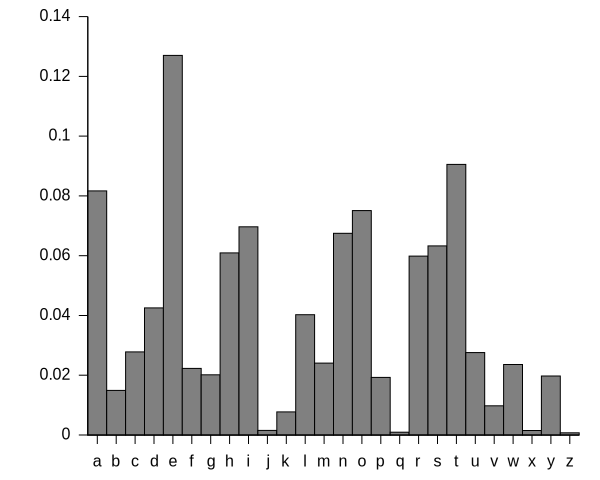

What is Project Euler?
- Math-based computer science problems
- 498 problems currently
- Program should take under one minute

Why Python?
- No compiling
- Handles large numbers efficiently
- gmpy (General Multiprecision Python)
Problem 1
Find the sum of all multiples of 3 or 5 below 1000
print(sum(filter(lambda x:
x % 3 == 0 or x % 5 == 0,
range(1, 1000))))
Problem 59
XOR encryption
- Convert text to ASCII
- XOR each byte with key
- The same key can be used for decryption
| x |
y |
x XOR y |
| 0 |
0 |
0 |
| 0 |
1 |
1 |
| 1 |
0 |
1 |
| 1 |
1 |
0 |
Example
- message = 101
- key = 011
- 101 ^ 011 = 110 (cipher text)
- 110 ^ 011 = 101 (message)
Unbreakable encryption
- Key is the same length as message
- Key is completely random
- Key and message are stored in different places
Workaround
Key can be a password and cycled throughout the message
message = KATYPERRY
key = CAT
59 - XOR decryption
Given:
- Key is 3 lowercase characters
- File with encrypted ASCII codes
- Plain text is English
Find sum of ASCII values of original text
Frequency Analysis
English characters vs. frequency of appearance

Analyze
- Split cipher text to three piles for every third character
- Find most common character in each pile, c
- Determine most common English character, x
- key = c XOR x
Solve
- XOR each character in cipher text with the key
/